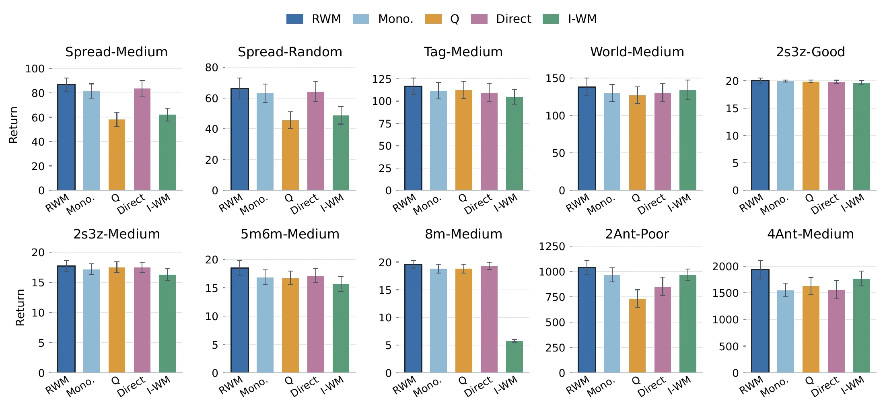
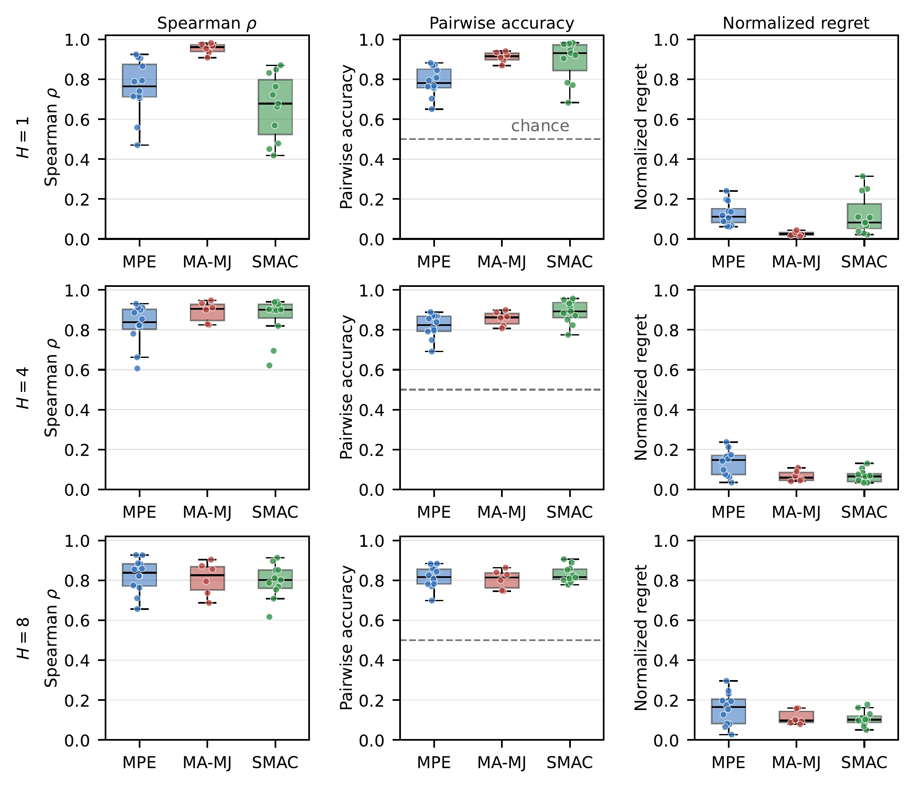
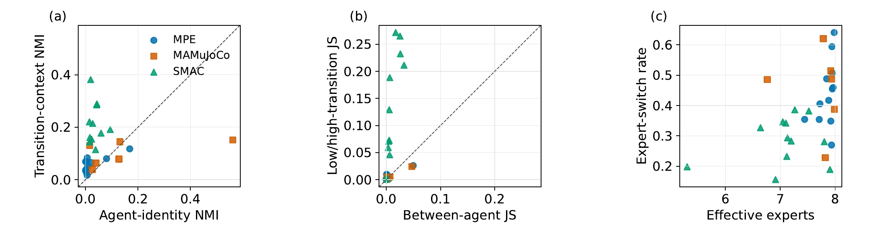

Propose
Sample candidate joint-action sequences from the frozen flow policy.
LOOK AHEAD. ACT TOGETHER.
MA-WAM compares candidate joint futures before acting, using a routed world model to choose a coordinated action sequence at test time.
Sun Yat-sen University
01 / Overview
A reactive policy executes one proposed joint action without comparing its consequences with other possibilities. MA-WAM lets a frozen multi-agent flow policy propose several joint-action sequences, then uses a Routed World Model (RWM) to predict their outcomes. The planner selects the sequence with the highest predicted team return, executes its first action, and replans from the next observation.

02 / Method
The world model conditions on the joint observation and action to represent dependencies among agents. Routing combines shared experts for dynamics and reward prediction. The flow policy and world model remain fixed during deployment.

Sample candidate joint-action sequences from the frozen flow policy.
Roll out candidates with RWM and rank their predicted cumulative team returns.
Execute the first joint action of the selected sequence and plan again at the next observation.
03 / Videos
Play the trajectory videos archived with this paper project.
Expert offline trajectory · selected rank 1
Expert offline trajectory · selected rank 1
Expert offline trajectory · selected rank 1
Good dataset · episode 31669
Good dataset · episode 13583
Good dataset · episode 16943
Good dataset · episode 23654
These videos visualize recorded offline dataset trajectories. SMAC movement, allied actions and health follow the recordings, rendered with custom unit artwork; this is not StarCraft client footage or an evaluation of the proposed method. Enemy attack poses are inferred from allied health changes, and a terminal display frame may be appended for recorded wins.
04 / Results
MA-WAM is evaluated on 30 task and dataset combinations across MAMuJoCo, SMAC, and MPE. It achieves higher mean return than direct execution in 26 settings. The reported gains compare planning with direct execution under the paper’s fixed-denoising protocol.
Bold and underlined entries retain the paper’s markings. Scroll wide tables horizontally.
Main results across MPE, SMAC, and MA-MuJoCo. Entries are episode returns; MPE uses the normalized score scale, whereas SMAC and MA-MuJoCo use native returns. MA-WAM (ours) reports mean ± standard deviation across seeds, while published baselines retain their source-paper uncertainty conventions. Baseline abbreviations follow the manuscript.
| Task | Quality | BC | MA-ICQ | MA-TD3+BC | MA-CQL | OMAR | MADiff | MA-SfBC | DOM2 | MA-WAM (ours) |
|---|---|---|---|---|---|---|---|---|---|---|
| Spread | Expert | 35.0±2.6 | 104.0±3.4 | 108.3±3.9 | 98.2±5.2 | 114.9±2.6 | 95.0±5.3 | 87.5±7.3 | 88.7±6.3 | 118.3±1.5 |
| Md-Replay | 10.0±3.8 | 13.6±5.7 | 15.4±5.6 | 31.4±7.2 | 37.9±6.1 | 30.3±2.5 | 8.2±4.6 | 63.1±9.5 | 61.6±3.0 | |
| Medium | 31.6±4.8 | 29.3±5.5 | 39.4±3.6 | 34.1±7.2 | 47.9±18.9 | 64.9±7.7 | 51.6±14.2 | 78.6±8.1 | 86.7±2.8 | |
| Random | -0.5±3.2 | 6.3±3.5 | 9.8±4.9 | 24.0±9.8 | 34.4±5.3 | 6.9±3.1 | 5.1±3.9 | 37.4±11.3 | 66.2±3.2 | |
| Tag | Expert | 40.0±9.6 | 113.0±14.4 | 115.2±12.8 | 119.3±14.0 | 123.9±10.5 | 103.0±12.0 | 77.4±13.9 | 98.2±14.4 | 132.9±5.5 |
| Md-Replay | 0.9±1.4 | 34.5±27.8 | 28.7±20.9 | 41.7±15.3 | 47.1±15.3 | 53.9±11.4 | 12.7±7.3 | 68.2±16.7 | 77.4±5.0 | |
| Medium | 22.5±1.8 | 63.3±20.0 | 65.1±29.5 | 61.7±23.1 | 66.7±23.2 | 72.7±9.4 | 47.1±17.9 | 82.6±18.2 | 116.7±4.6 | |
| Random | 1.2±0.5 | 2.2±1.3 | 6.0±2.1 | 11.1±2.8 | 11.1±2.8 | 4.6±2.6 | 11.6±5.1 | 29.6±8.1 | 50.1±2.9 | |
| World | Expert | 33.0±9.9 | 109.5±22.8 | 110.3±21.3 | 119.8±28.1 | 110.4±25.7 | 109.3±15.4 | 97.3±19.1 | 99.5±17.1 | 148.3±7.1 |
| Md-Replay | 2.3±1.5 | 12.0±9.1 | 17.4±8.1 | 19.3±18.3 | 42.9±19.5 | 19.8±6.2 | 9.1±5.9 | 65.9±10.6 | 60.4±3.5 | |
| Medium | 25.3±2.0 | 71.9±20.0 | 73.4±9.3 | 58.6±11.2 | 74.6±11.5 | 84.7±12.3 | 54.2±22.7 | 84.5±23.4 | 138.0±6.8 | |
| Random | -2.4±0.5 | 1.0±3.2 | 2.8±5.5 | 0.6±2.0 | 5.9±5.2 | 6.1±2.4 | 3.1±1.3 | 4.1±1.1 | 5.0±1.7 |
| Task | Quality | BC | MA-ICQ | MA-CQL | MADT | MADiff | DoF | Flow BC | MAC-Flow | VGM2P | MA-WAM (ours) |
|---|---|---|---|---|---|---|---|---|---|---|---|
| 3m | Good | 16.0±1.0 | 18.8±0.6 | 19.0±0.3 | 19.6±0.7 | 19.3±0.5 | 19.8±0.2 | 20.0±0.0 | 19.8±0.2 | 19.5±0.7 | 20.0±0.3 |
| Medium | 8.2±0.8 | 18.1±0.7 | 18.9±0.7 | 17.2±0.7 | 16.4±2.6 | 18.6±1.2 | 14.7±1.5 | 18.0±3.2 | 16.9±1.1 | 16.0±0.8 | |
| Poor | 4.4±0.1 | 14.4±1.2 | 5.8±0.4 | 8.9±0.3 | 10.3±6.1 | 10.9±1.1 | 4.5±0.1 | 10.6±2.2 | 14.9±1.5 | 12.8±0.9 | |
| 2s3z | Good | 18.2±0.4 | 19.6±0.3 | 19.1±0.8 | 19.4±0.1 | 15.9±1.2 | 18.5±0.8 | 19.5±0.1 | 19.5±0.5 | 19.9±0.1 | 20.0±0.1 |
| Medium | 14.3±0.7 | 17.2±0.8 | 14.3±2.0 | 17.4±0.3 | 15.6±0.3 | 18.1±0.9 | 15.1±2.0 | 17.6±0.6 | 16.5±0.6 | 17.7±0.5 | |
| Poor | 6.7±0.3 | 12.1±0.4 | 10.1±0.7 | 9.9±0.2 | 8.5±1.3 | 10.0±1.1 | 6.9±0.8 | 8.5±0.6 | 7.9±0.7 | 10.0±0.1 | |
| 5m_vs_6m | Good | 16.6±0.6 | 16.3±0.9 | 13.8±3.1 | 18.0±1.0 | 16.5±2.8 | 17.7±1.1 | 14.7±2.1 | 18.6±3.5 | 17.6±1.3 | 17.6±0.6 |
| Medium | 14.2±0.5 | 17.2±0.4 | 16.8±3.1 | 17.5±0.4 | 15.2±2.6 | 16.2±0.9 | 12.8±0.8 | 15.6±1.3 | 17.0±0.9 | 18.5±0.5 | |
| Poor | 7.5±0.2 | 9.4±0.4 | 10.4±1.0 | 8.9±0.3 | 8.9±1.3 | 10.8±0.3 | 7.7±0.8 | 9.8±2.1 | 10.7±1.1 | 11.1±0.5 | |
| 8m | Good | 16.7±0.4 | 19.6±0.3 | 13.1±6.1 | 19.2±0.1 | 18.9±1.1 | 19.6±0.3 | 19.5±0.2 | 19.7±0.3 | 19.7±0.4 | 20.0±0.2 |
| Medium | 10.7±0.5 | 18.6±0.5 | 16.3±3.1 | 18.0±0.5 | 16.8±1.6 | 18.6±0.8 | 18.2±0.8 | 19.4±0.6 | 18.2±1.6 | 19.6±0.2 | |
| Poor | 5.3±0.1 | 10.8±0.8 | 4.6±2.4 | 5.1±0.1 | 9.8±0.9 | 12.0±1.2 | 4.9±0.1 | 11.5±0.8 | 4.9±0.1 | 7.1±0.1 |
| Task | Quality | BC | MA-TD3+BC | MA-CQL | MADT | MADiff | MA-SfBC | DOM2 | MA-WAM (ours) |
|---|---|---|---|---|---|---|---|---|---|
| 2×Ant | Good | 2697±267 | 2922±194 | 464±469 | 2940±56 | 3105±47 | 1764±457 | 2187±190 | 2642±92 |
| Medium | 1145±126 | 744±283 | 799±186 | 1210±89 | 1241±30 | 1038±295 | 1432±305 | 1330±63 | |
| Poor | 954±80 | 1256±122 | 857±73 | 902±24 | 1037±32 | 883±373 | 916±182 | 1038±35 | |
| 4×Ant | Good | 2802±133 | 2628±971 | 344±631 | 3090±26 | 3087±32 | 1722±392 | 1836±242 | 3025±23 |
| Medium | 1617±153 | 1843±494 | 929±349 | 1697±43 | 1897±44 | 1529±372 | 1692±183 | 1933±70 | |
| Poor | 1033±122 | 1075±96 | 518±112 | 1268±51 | 1332±45 | 976±241 | 1158±225 | 1358±39 |

The manuscript has not yet been publicly released.
Per-setting planning gain with three denoising steps per candidate. Reported scores are means under the common evaluation protocol; MPE uses normalized score, while SMAC and MA-MuJoCo use raw return. Δ is Planning minus Reactive, computed before display rounding, and bold marks a positive Δ. Planning improves the mean on 26 of 30 settings.
| Task | Quality | Reactive | Planning | Δ | Task | Quality | Reactive | Planning | Δ |
|---|---|---|---|---|---|---|---|---|---|
| MPE (normalized score) | SMAC (episode return) | ||||||||
| Spread | Expert | 111.6 | 118.2 | +6.6 | 3m | Good | 19.0 | 19.5 | +0.5 |
| Md-Replay | 34.8 | 55.7 | +20.9 | Medium | 13.4 | 13.8 | +0.4 | ||
| Medium | 54.0 | 84.7 | +30.7 | Poor | 10.0 | 11.0 | +0.9 | ||
| Random | 37.4 | 64.4 | +27.0 | 2s3z | Good | 19.9 | 19.5 | -0.4 | |
| Tag | Expert | 130.8 | 132.0 | +1.1 | Medium | 17.3 | 17.2 | -0.1 | |
| Md-Replay | 69.7 | 73.2 | +3.5 | Poor | 9.3 | 9.7 | +0.4 | ||
| Medium | 109.7 | 110.6 | +0.8 | 5m_vs_6m | Good | 17.8 | 18.4 | +0.5 | |
| Random | 24.5 | 49.2 | +24.7 | Medium | 15.9 | 16.1 | +0.3 | ||
| World | Expert | 143.7 | 144.4 | +0.7 | Poor | 10.7 | 10.9 | +0.2 | |
| Md-Replay | 45.5 | 60.2 | +14.7 | 8m | Good | 19.6 | 20.0 | +0.4 | |
| Medium | 136.5 | 132.4 | -4.1 | Medium | 17.9 | 19.1 | +1.2 | ||
| Random | 1.4 | 4.5 | +3.1 | Poor | 6.5 | 7.0 | +0.4 | ||
| MA-MuJoCo, 2×Ant (per-agent return) | MA-MuJoCo, 4×Ant | ||||||||
| 2×Ant | Good | 2391 | 2406 | +15 | 4×Ant | Good | 2734 | 2988 | +254 |
| Medium | 1033 | 1256 | +223 | Medium | 1737 | 1635 | -102 | ||
| Poor | 775 | 928 | +153 | Poor | 1098 | 1305 | +206 | ||
Benchmark-level seed-averaged gain summary with three denoising steps per candidate. Mean Δ is in each benchmark's native unit. Aggregate relative gain is computed after summing reactive and planning scores within each benchmark family. Mean and median setting-wise gains first compute a relative gain for each task--quality setting and then aggregate those percentages within the benchmark family.
| Benchmark | Settings | Positive/Zero/ Negative Δ | Mean Δ | Agg. rel. gain | Mean setting-wise gain | Median setting-wise gain |
|---|---|---|---|---|---|---|
| MPE | 12 | 11/0/1 | +10.81 | +14.42% | +46.27% | +19.16% |
| SMAC | 12 | 10/0/2 | +0.41 | +2.75% | +3.29% | +2.70% |
| MA-MuJoCo | 6 | 5/0/1 | +125.00 | +7.68% | +10.70% | +14.04% |
Full 30-setting equal-candidate selector control with three denoising steps per candidate. Each entry is a mean under the common evaluation protocol. Both arms use M=8 candidates; Random selects uniformly, whereas RWM ranks candidates by predicted return. MPE uses OMAR normalized score; SMAC and MA-MuJoCo use native returns. Within each block, Δ is RWM minus Random, computed before display rounding; bold marks a positive difference. RWM exceeds Random in mean on 23 settings.
| Task | Quality | Random M=8 | RWM M=8 | Δ | Task | Quality | Random M=8 | RWM M=8 | Δ |
|---|---|---|---|---|---|---|---|---|---|
| MPE (normalized score) | SMAC (episode return) | ||||||||
| Spread | Expert | 111.9 | 118.2 | +6.3 | 3m | Good | 19.5 | 19.5 | +0.0 |
| Md-Replay | 34.2 | 55.7 | +21.4 | Medium | 14.9 | 13.8 | -1.1 | ||
| Medium | 51.5 | 84.7 | +33.2 | Poor | 8.9 | 11.0 | +2.1 | ||
| Random | 37.1 | 64.4 | +27.4 | 2s3z | Good | 19.8 | 19.5 | -0.3 | |
| Tag | Expert | 133.7 | 132.0 | -1.8 | Medium | 16.7 | 17.2 | +0.5 | |
| Md-Replay | 68.5 | 73.2 | +4.7 | Poor | 9.1 | 9.7 | +0.6 | ||
| Medium | 109.4 | 110.6 | +1.1 | 5m_vs_6m | Good | 17.7 | 18.4 | +0.7 | |
| Random | 31.1 | 49.2 | +18.1 | Medium | 16.9 | 16.1 | -0.8 | ||
| World | Expert | 147.8 | 144.4 | -3.5 | Poor | 10.3 | 10.9 | +0.6 | |
| Md-Replay | 44.0 | 60.2 | +16.2 | 8m | Good | 19.9 | 20.0 | +0.1 | |
| Medium | 130.9 | 132.4 | +1.5 | Medium | 17.6 | 19.1 | +1.5 | ||
| Random | 1.0 | 4.5 | +3.5 | Poor | 6.4 | 7.0 | +0.6 | ||
| MA-MuJoCo, 2Ant (per-agent return) | MA-MuJoCo, 4Ant (per-agent return) | ||||||||
| 2Ant | Good | 2741 | 2406 | -335 | 4Ant | Good | 2906 | 2988 | +82 |
| Medium | 981 | 1256 | +275 | Medium | 1712 | 1635 | -78 | ||
| Poor | 820 | 928 | +108 | Poor | 1190 | 1305 | +115 | ||
Same-state counterfactual candidate-ranking diagnostic on MPE and MAMuJoCo Medium tasks using 64 anchor states per task. RWM is compared with the analytical chance references for Top-1, Top-2, and Spearman rank correlation, and with the 0.5 chance reference for PairAcc (pairwise ranking accuracy). NormReg (normalized selection regret) compares RWM selection with empirical uniform selection from the same candidate sets.
| Setting | Top-1↑ | Top-2↑ | Spearman↑ | PairAcc↑ | NormReg↓ | |||||
|---|---|---|---|---|---|---|---|---|---|---|
| RWM | Chance | RWM | Chance | RWM | Chance | RWM | Chance | RWM | Rand. | |
| MPE | ||||||||||
| Spread-Medium | 0.422 | 0.125 | 0.703 | 0.250 | 0.584 | 0.000 | 0.737 | 0.500 | 0.208 | 0.555 |
| Tag-Medium | 0.250 | 0.125 | 0.422 | 0.250 | 0.240 | 0.000 | 0.590 | 0.500 | 0.506 | 0.534 |
| World-Medium | 0.266 | 0.125 | 0.438 | 0.250 | 0.254 | 0.000 | 0.602 | 0.500 | 0.455 | 0.572 |
| MAMuJoCo | ||||||||||
| 2Ant-Medium | 0.312 | 0.125 | 0.500 | 0.250 | 0.290 | 0.000 | 0.609 | 0.500 | 0.297 | 0.490 |
| 4Ant-Medium | 0.125 | 0.125 | 0.328 | 0.250 | 0.220 | 0.000 | 0.583 | 0.500 | 0.403 | 0.452 |
| Mean | 0.275 | 0.125 | 0.478 | 0.250 | 0.318 | 0.000 | 0.624 | 0.500 | 0.374 | 0.521 |
Candidate-count profiling on an RTX 3090 and an A100. Results are averaged equally over MPE Spread-Medium, MAMuJoCo 2Ant-Medium, and SMAC 3m-Medium. Candidates are generated sequentially and scored in one batched RWM pass. We use four parallel environments, K=3, and a requested rollout cap H=8; the effective action horizons are 8/8/3 in the listed task order. Each entry is the mean of three repeats, each with 10 warm-up and 30 timed steps per setting. Total is Gen. plus Score.
| RTX 3090 | A100 | |||||||
|---|---|---|---|---|---|---|---|---|
| M | Gen. (ms) | Score (ms) | Total (ms) | Share | Gen. (ms) | Score (ms) | Total (ms) | Share |
| 1 | 55.9 | 10.1 | 66.0 | 15.3% | 64.4 | 11.1 | 75.5 | 14.8% |
| 2 | 106.3 | 12.8 | 119.1 | 10.7% | 120.5 | 12.5 | 132.9 | 9.4% |
| 4 | 209.0 | 13.3 | 222.3 | 6.0% | 234.0 | 12.2 | 246.2 | 4.9% |
| 8 | 414.6 | 13.4 | 428.0 | 3.1% | 461.6 | 12.1 | 473.7 | 2.5% |
| 16 | 827.9 | 13.3 | 841.2 | 1.6% | 931.0 | 12.6 | 943.6 | 1.3% |
Batched versus sequential candidate-generation latency for six Medium settings at M=8. We use the protocol of the corresponding table in the paper: four parallel environments, K=3, a requested rollout cap of eight, and three repeats with 10 warm-up and 30 timed steps per setting. Batch folds the M candidates into one generation pass; ``×'' is the within-row generation speedup. Times are milliseconds. ``Qual.'' is the number of task--quality settings sharing that architecture. The effective horizon for SMAC 3m is three. The A100 measurements were taken on a shared node.
| RTX 3090 | A100 | |||||||
|---|---|---|---|---|---|---|---|---|
| Setting | A | Qual. | Seq (ms) | Batch (ms) | × | Seq (ms) | Batch (ms) | × |
| MPE Spread | 3 | 4 | 424.6 | 73.2 | 5.8 | 456.5 | 88.2 | 5.2 |
| MPE Tag | 3 | 4 | 430.4 | 73.5 | 5.9 | 454.8 | 87.7 | 5.2 |
| MPE World | 3 | 4 | 429.0 | 73.5 | 5.8 | 480.8 | 95.2 | 5.1 |
| MAMuJoCo 2Ant | 2 | 3 | 408.4 | 70.4 | 5.8 | 469.9 | 77.9 | 6.0 |
| MAMuJoCo 4Ant | 4 | 3 | 455.1 | 95.7 | 4.8 | 470.0 | 111.1 | 4.2 |
| SMAC 3m | 3 | 3 | 425.3 | 71.1 | 6.0 | 453.1 | 85.8 | 5.3 |
SMAC win rate; higher is better. Reactive uses M=1, whereas planning uses M=8 under the horizon protocol in Appendix (paper). Both use the fixed three-step denoising budget of the corresponding table in the paper. Planning improves 8 of 12 settings and ties 2 at the win-rate floor. Δ is Planning minus Reactive, and bold marks an improvement.
| Task | Quality | Reactive | Planning | Δ | Task | Quality | Reactive | Planning | Δ |
|---|---|---|---|---|---|---|---|---|---|
| 3m | Good | 0.92 | 0.96 | +0.04 | 5m_vs_6m | Good | 0.76 | 0.82 | +0.06 |
| Medium | 0.46 | 0.50 | +0.04 | Medium | 0.56 | 0.60 | +0.04 | ||
| Poor | 0.22 | 0.30 | +0.08 | Poor | 0.10 | 0.14 | +0.04 | ||
| 2s3z | Good | 0.98 | 0.92 | -0.06 | 8m | Good | 0.94 | 1.00 | +0.06 |
| Medium | 0.60 | 0.56 | -0.04 | Medium | 0.74 | 0.88 | +0.14 | ||
| Poor | 0.00 | 0.00 | 0 | Poor | 0.00 | 0.00 | 0 |
05 / Analysis
Planning benefits depend on both the quality of the candidate set and the reliability of the world model’s ranking. The diagnostics relate planning gains to reactive-policy headroom and ranking reliability; they do not imply that planning improves every setting.

Further experiments



{kind=link}
{kind=link}
{kind=link}